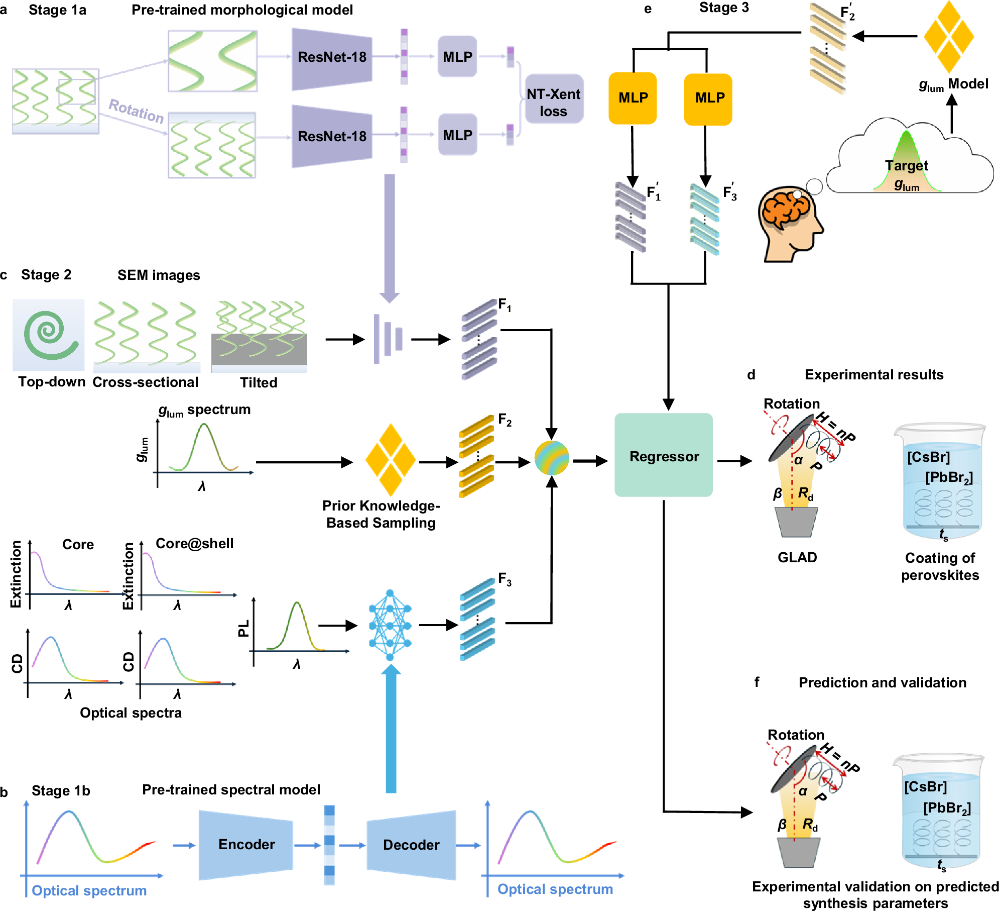
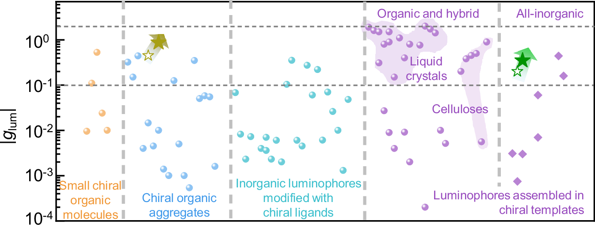
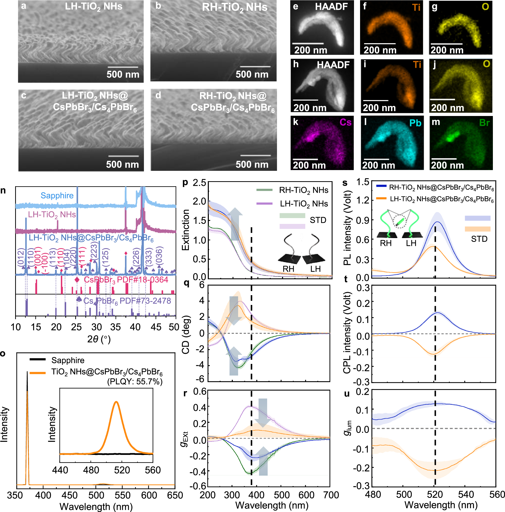
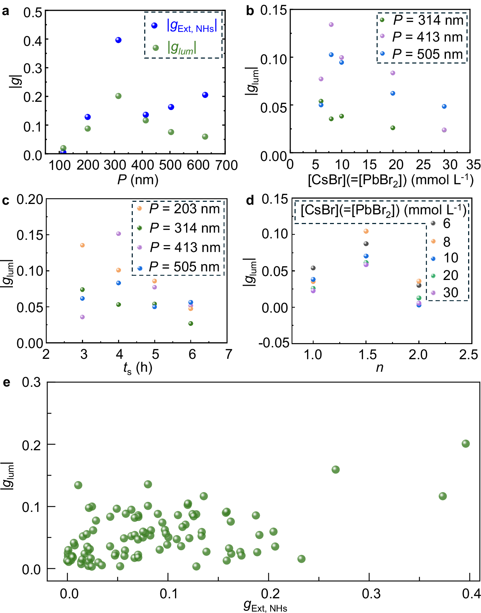
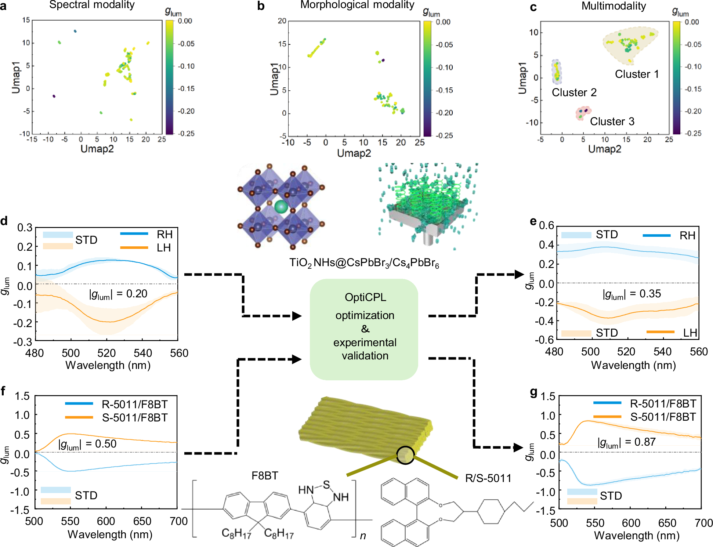

全文精读
全无机钙钛矿包覆二氧化钛纳米螺旋手性光学性能的多模态深度学习优化及有机手性发光体逆向设计迁移
Multimodal deep-learning optimization of chiroptical properties in all-inorganic perovskite-coated TiO2 nanohelices and inverse-design transfer to organic chiral luminophores
解读更新 2026-10-17 09:40 · 依据论文全文整理
全文精读已完成，文章版正在逐步升级。现有内容可继续阅读。
如何在制备参数高度耦合、实验数据有限时优化手性发光材料？本文以钙钛矿包覆TiO₂纳米螺旋为对象，融合显微形貌与光谱，构建从目标发光不对称谱到制备条件的OptiCPL逆向设计流程。实验将全无机体系的|g_lum|从0.20提高至0.35，并在有机体系中达到0.87。解读：重点在多模态表征、潜空间重建与实验闭环，而非已证明普适泛化；补充材料未核读，长期可靠性证据不足。
研究问题
全无机手性发光体需要兼顾偏振纯度与可制备性，但螺旋几何、沉积条件和壳层生长相互耦合，单因素扫描难以找到联合最优。作者指出已有方法存在数据稀疏、多模态融合不足和泛化受限，核心问题是如何以有限实验指导复杂工艺优化。
方法与路线
作者以GLAD制备TiO₂螺旋并共形包覆钙钛矿，结合形貌与光谱建模。ResNet-18经SimCLR适应SEM图像，五类光谱经自编码器融合；目标g_lum谱先重建潜在特征，再回归八项制备参数并实验检验。230个数据实例源于128次独立合成。
创新与比较
解读：方法特色在于处理逆向设计时尚无实物形貌与光谱的困难，通过目标性能谱重建两类潜在嵌入，再联合输出工艺条件，而非独立挑选参数极值。材料侧将手性模板与非手性发光壳层组合，算法侧提供目标驱动的多模态设计接口，不应据此宣称全新网络架构。
证据与发现
实验按预测条件获得RH、LH核壳样品g_lum分别为+0.33和−0.35，最高绝对值较人工优化0.20提高75%。有机R/S-5011/F8BT体系则由0.50提高至0.87。无螺旋核对照具有PL而无CD或CPL，支持手性传递；集体耦合仍是作者提出的可能机制。
局限与边界
作者明确，更广泛分子发光体可能需要分子图或构象信息。现有资料缺少补充材料中的完整指标与划分细节，不能排除增强样本泄漏风险或确认普适泛化，也不足以证明长期可靠性。未核实原文件缺项；P2、P9、P10均为已纠正的提取错误，并非缺失公式。
方向关联
解读：与生成式结构设计直接相关的是将几何、工艺与性能联合表征，并把目标响应转成可执行实验条件。对智能运维，可借鉴图像与信号融合；对可靠性研究，只能迁移建模思路，不能把归因图抗噪或材料类别的稳定性优势当作寿命预测、故障诊断证据。
后续研究建议
建议：先检查独立合成样本是否在增强前完成训练测试划分，再核查消融、误差及设备可实现性约束。若迁移至结构可靠性设计，应补入载荷、环境和退化观测，以性能、寿命及制造约束构成多目标闭环，并开展独立批次验证；这些不是本文已完成的工作。
阅读建议
推荐作为生成式结构设计的方法迁移文献重点阅读，尤其关注目标光谱到工艺参数的逆向映射及实验验证；不宜作为智能运维或服役可靠性的直接证据。
原图未改动。以下图注来自标注的来源，不据此补写摘要未报告的实验结论。
已取得的论文原图

原文图注与出处
a Glancing angle deposition (at an angle \(\alpha\) ) of titanium dioxide (TiO 2 ) with unidirectional substrate rotation, for b generating TiO 2 nanohelices (NHs) with the helicity characterized with the handedness, helical pitch ( P ), the number of pitches ( n ), and helical height ( H = nP ). c TiO 2 NHs, functioning as chiral templates, are conformally coated with achiral luminophores to form chiral core@shell nano-luminophores (i.e., TiO 2 NHs@CsPbBr 3 /Cs 4 PbBr 6 ). d Under linearly polarized excitation, left-handed (LH) and right-handed (RH) TiO 2 NHs@CsPbBr 3 /Cs 4 PbBr 6 generate green CPL preferentially polarized in RH and LH, respectively. e Multimodal dataset including the experimental conditions of forming chiral core@shells, as well as structural images and optical characterizations, are used to train the deep-learning model, OptiCPL, which is applied to accelerate the optimization of | g lum |.
Sun, Haifeng et al.
原文图页 · CC BY 4.0

原文图注与出处
Stage 1 comprises two pre-trained modules: ( a Stage 1a) morphological module, where a vision pre-trained model is fine-tuned on SEM images via self-supervised learning; ( b Stage 1b) spectral module, where different types of spectra are encoded using an autoencoder-based framework. c Stage 2: embeddings extracted from the SEM images and diverse spectra are fused with g lum spectra, and the combined representations are used to train a regressor toward ( d ) the experimental result. e Stage 3: a g lum -guided model is trained to capture correlations among g lum spectrum, morphological features, and spectral features. Given a desired g lum spectrum, the model reconstructs both morphological and spectral embeddings, which are then processed by the regressor to ( f ) predict the optimized set of fabrication parameters, and finally validated by the experiments.
Sun, Haifeng et al.
原文图页 · CC BY 4.0

原文图注与出处
Luminophores assembled in liquid crystals and celluloses are highlighted by shadowed areas in rose. The all-inorganic chiral nano-luminophores (i.e., TiO 2 NHs@CsPbBr 3 /Cs 4 PbBr 6 ), as reported in this work, exhibit | g lum | = 0.2 (marked by hollow green star), increased to 0.35 (marked by solid green star) guided by OptiCPL, a universal few-shot multimodal deep-learning framework. The OptiCPL model can be transferred to organic chiral luminophores, leading to raising | g lum | of the polymer-based luminophores ( R / S -5011/F8BT) from 0.50 (marked by hollow brown star) to 0.87 (marked by solid brown star). The data points within each category are separated along x -axis for visualization purposes. The horizontal dashed lines represent g lum = 0.1 and 2, respectively. Data points are color-coded by material types: orange for small chiral organic molecules, blue for chiral organic aggregates, cyan for inorganic luminophores modified with chiral ligands, and purple for luminophores assembled in chiral templates, whereby purple diamonds denote all-inorganic ones. Source data are provided as a Source Data file.
Sun, Haifeng et al.
原文图页 · CC BY 4.0

原文图注与出处
The core NHs ( P ≈ 300 nm and n = 1), deposited by GLAD, was conformally coated with achiral shells via ligand-assisted co-precipitation (at the concentration of perovskite precursors [CsBr] = [PbBr 2 ] = 4 mmol L -1 , and soaking period ( t s ) = 5 h). Scanning electron microscopies (SEM) tilted images: a LH- and b RH-TiO 2 NHs ( P = 310 nm and 300 nm, respectively); c LH- an d d RH-TiO 2 NHs@CsPbBr 3 /Cs 4 PbBr 6 ( P = 315 nm and 310 nm, respectively). e High-angle annular dark-field scanning transmission electron microscopy (HAADF-STEM) image with elemental mapping of LH-TiO 2 NHs: f Ti; g O. h HAADF-STEM image with elemental mapping of LH-TiO 2 NHs@CsPbBr 3 /Cs 4 PbBr 6 : i Ti; j O; k Cs; l Pb; m Br. n X-ray diffraction (XRD) spectra of sapphire on which chiral nano-luminophores were deposited, LH-TiO 2 NHs, LH-TiO 2 NHs@CsPbBr 3 /Cs 4 PbBr 6 , together with XRD patterns of CsPbBr 3 (PDF#18-0364) and Cs 4 PbBr 6 (PDF#73-2478). o Measurement of photoluminescence quantum yield (PLQY) of LH-TiO 2 NHs@CsPbBr 3 /Cs 4 PbBr 6 . p–r UV–visible spectra of TiO 2 NHs and TiO 2 NHs@CsPbBr 3 /Cs 4 PbBr 6 : p extinction, q circular dichroism (CD), and r anisotropic g -factor ( g Ext ). Luminescence characterization of TiO 2 NHs@CsPbBr 3 /Cs 4 PbBr 6 : s photoluminescence (PL), t circularly polarized luminescence (CPL), and u luminescence dissymmetry factor ( g lum ). (p-u) Solid lines: mean values; shaded areas: standard deviations (STD); statistically evaluated from multiple measurements. The shell coating enhances p extinction while suppressing q CD and r g Ext signals (marked by arrows). p–r RH-cores: green spectra; LH-cores: magenta spectra. p–u RH-core@shells: blue spectra; LH-core@shells: orange spectra. Source data are provided as a Source Data file.
Sun, Haifeng et al.
原文图页 · CC BY 4.0已取得的论文原图


原文图注与出处
a Plots of g Ext of LH-TiO 2 NHs ( g Ext, NHs , measured at a wavelength of 370 nm, blue dots) and the absolute g lum (| g lum | , evaluated at a wavelength of 520 nm, green dots) versus P ( = 100–650 nm) of LH-TiO 2 NHs, at n = 1, [CsBr] = [PbBr 2 ] = 4 mmol L -1 , and t s = 5 h. b Plots of | g lum | versus [CsBr] ( = [PbBr 2 ] = 6–30 mmol L -1 ), at P = 300–505 nm, n = 1, and t s = 5 h. c Plots of | g lum | versus t s (= 3–6 h), at P = 200–505 nm, n = 1, [CsBr] = [PbBr 2 ] = 6 mmol L −1 . d Plots of | g lum | versus n (= 1, 1.5, 2), at P = 314 nm, [CsBr] = [PbBr 2 ] = 6–30 mmol L -1 , and t s = 5 h. In (a-d), GLAD of NH cores were performed at α = 87°, deposition rate of TiO 2 ( R d ) = 0.15 nm s -1 , and the calibration factor of R d at α (i.e., β ) = 0.33. e Plots of | g lum | versus g Ext, NHs , at α = 85°–87°, β = 0.33-0.4, R d = 0.15–0.25 nm s -1 , P = 100–650 nm, n = 1–8, [CsBr] = [PbBr 2 ] = 4–30 mmol L -1 , and t s = 3–6 h, where there are 98 data points in total.
Sun, Haifeng et al.
原文图页 · CC BY 4.0

原文图注与出处
a Spectral modality feature map after dimensionality reduction. b Morphological modality feature map after dimensionality reduction. c Multimodal feature map combining spectral and morphological features. d, e OptiCPL framework is applied to guide the optimization of | g lum | of the all-inorganic chiral nano-luminophores (TiO 2 NHs@CsPbBr 3 /Cs 4 PbBr 6 ) from ( d ) 0.20 (manually optimized) to ( e ) 0.35. f, g OptiCPL framework is applied to guide the optimization of | g lum | of organic chiral luminophores ( R / S -5011/F8BT) from ( f ) 0.50 (manually optimized) to ( g ) 0.87. Solid lines: mean values; shaded areas: standard deviations (STD). Source data are provided as a Source Data file.
Sun, Haifeng et al.
原文图页 · CC BY 4.0查看公开摘要
Circularly polarized luminescence (CPL) has been catching increasing attention for developing advanced photonic displays, quantum communication, bioimaging, and chiral sensing. All-inorganic chiral luminophores are superior to their organic or organic-inorganic hybrid counterparts in thermal stability, environmental robustness and device compatibility, but limited by the difficulty in fabrication and low luminescence dissymmetry factor ( g lum < 0.1), whereby g lum is generally applied to evaluate the purity of circular polarization of CPL. Herein, chiral TiO 2 nanohelices (NHs) act as chiral templates that are conformally coated with achiral perovskite luminophores composed of cesium lead bromides, to form all-inorganic chiral core@shell nano-luminophores. Chirality transmission from TiO 2 NHs to perovskites accounts for the generation of CPL. Given by the complex and multifactorial experimental conditions, the manual engineering of fabrication procedure leads to an optimized g lum = 0.2. To further optimize g lum , we develop OptiCPL, a few-shot multimodal deep-learning framework that integrates spectral and morphological features, to boost g lum from 0.20 to 0.35 through model prediction and experimental validation. In addition, the OptiCPL model is transferrable to polymer F8BT-based chiral organic luminophores, achieving g lum = 0.87. This work establishes a synergistic chiral core@shell approach and offers a transferable deep-learning framework for designing high- g lum CPL materials.